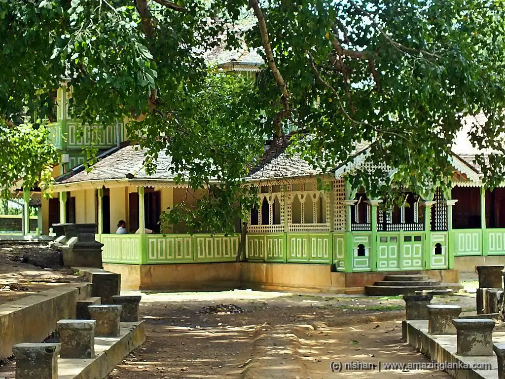

Explore one of Sri Lanka's most famous and well-preserved ancient manor houses, a testament to the power and architecture of the Kandyan aristocracy.
The Maduwanwela Walawwa, located in Kolonne near Udawalawe, is a grand ancestral home built by the Maduwanwela family in the late 17th century. At its peak, the manor house had over 120 rooms and 21 courtyards, though only a portion remains today for public viewing. It is a fascinating mix of Kandyan, Dutch, and British architectural styles, reflecting the changing times of the feudal lords (Disawes) who ruled the region.
The manor is famous for its intricate woodwork, unique door frames, and its beautiful mosaic floors made from pieces of fine ceramic. Some door frames were designed so that even high-ranking colonial officials had to bow when entering, a subtle show of power by the Disawe. Walking through its quiet courtyards and dark, wood-scented corridors provides a rare look into the domestic life of Sri Lankan nobility.
Back to Udawalawe Hub